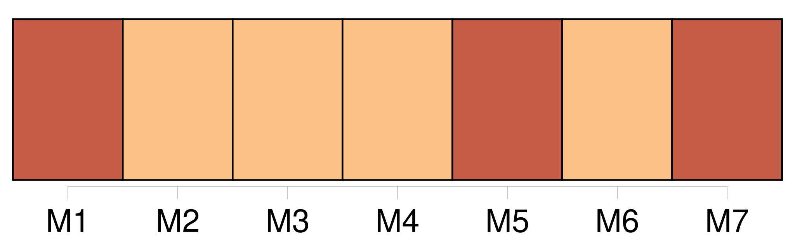
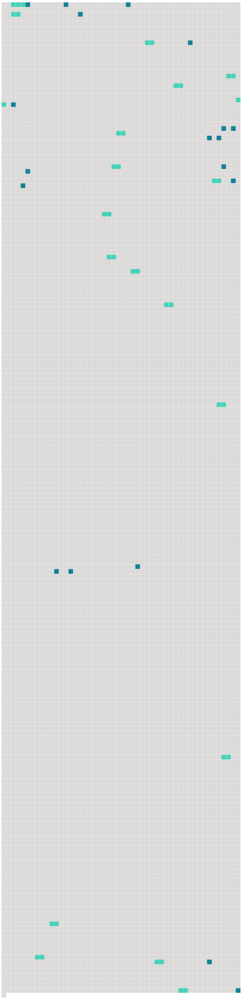

Longueur nb maillons : 38 mentions |
 |
C'était [mon cher papa] [qui] parlait, et dans ma joie de [le] savoir là, je fis un brusque mouvement pour me tourner vers [lui] , mais au même instant, je ressentis dans la hanche une douleur qui m'arracha un cri aigu et m'obligea de rester immobile. [2 phrases] Je revis [mon père] les deux poings levés, et ma mère dressée en face de [lui] comme la plus méchante des femmes. [12 phrases]
Ma mère si légère d'habitude, marchait presque lourdement, et [mon père] la suivait, tête basse, et [son] chapeau à la main comme à un enterrement. [16 phrases] Ce n'était pas ma mère occupée au dehors ainsi que [mon père] [5 phrases]
Ma mère essaya de me tranquilliser en m'assurant que tout allait bien à la maison, et [mon père] agacé par mon insistance finit par me dire : [7 phrases] [Notre père] passait [ses] veillées à fabriquer des jouets pour les petits. [11 phrases]
Elle répétait seulement à travers ses pleurs : [1 phrases] [Notre père] , pris de pitié sans doute, avait dit des mots consolants, et peu à peu le silence était revenu. [2 phrases] « Pourquoi m'as [-tu] repris [ton] amour?? [15 phrases]
[Notre père] s'en mêlait, parfois :
— Je la sais, [papa] [1 phrases]
— Oui, [papa] [8 phrases] [Notre père] riait et [renvoyait] Firmin apprendre sa fable.
[Il] ne se doutait pas que beaucoup de notre temps passait à cela. [14 phrases] Pour nous distraire, [notre père] nous apporta des romans d'aventures, et bientôt Firmin ne parla plus que par Brahmane et Vichnou. [17 phrases] Dans un instant, [mon père] et ma mère viendront me prendre pour me conduire au moulin de la Haie, chez oncle meunier, où je continuerai à vivre étendue, en attendant ma complète guérison. [6 phrases] Et, sans embrasser sa sœur ni tendre la main à [son beau-frère] , il me soulève de la banquette et m'emporte jusqu'à la voiture longue et basse, dans laquelle je passerai dorénavant toutes mes journées. [15 phrases]
Tante Rude me l'apprend sans douceur, tandis que [mon père] et ma mère, avec des mots affectueux, et mille précautions m'installent dans un lit tout préparé. [40 phrases]
Il me semblait que [mon père] et ma mère tenaient le bout d'une chaîne solidement rivée à ma poitrine, et que c'était cette chaîne -là qui se tendait et vibrait si durement dans l'espace. [57 phrases] « J'ai d'abord à te dire que [papa] et maman sont toujours bien sages. [1 phrases] [Papa] a repris [ses] sorties du soir comme au temps des disputes, mais c'est pour des travaux supplémentaires, afin de gagner plus d'argent. [93 phrases] » disait en riant [mon père] , lorsque la bouilloire pleine d'eau m'échappait et tombait avec un fracas assourdissant sur le carrelage de la cuisine. [76 phrases] [Mon père] et les jumeaux s'approchèrent rapidement aussi. [16 phrases] Je courus à la petite barrière de sortie et là, j'aperçus [mon père] et ma mère un peu à l'écart. [3 phrases]
[Mon père] monta aussitôt dans la voiture qui se trouvait devant [lui] , tandis que ma mère s'éloignait rapidement pour monter dans une autre voiture. [10 phrases] L'avenir devint très vite redoutable, car à mes questions directes, ma mère fut bien forcée de m'apprendre l'abandon définitif du foyer par [son mari] , et la demande en divorce qu'elle formulait contre [lui] |
 |
Il est possible de télécharger la ressource sur la page Ortolang |
Si vous avez des questions ou vous voyez des erreurs, merci d'envoyer un mail à silvia.federzoni89@gmail.com |